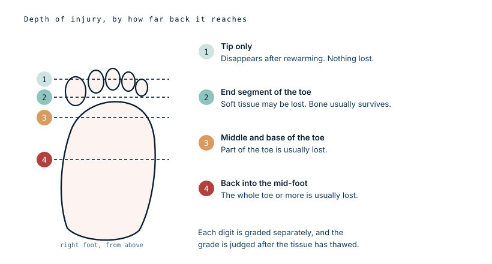
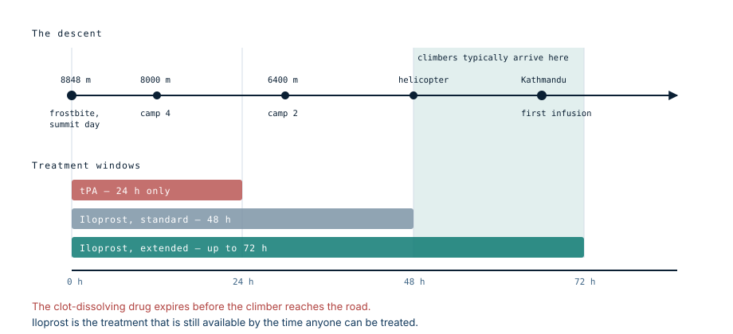

He stayed at Camp 4 to help another climber
A 33-year-old Australian summited Everest in May 2016 and came down to Camp 4, at 8000 metres. He spent the night there assisting a fellow climber rather than continuing down. In the morning he realised his feet were frozen.
The descent
His feet thawed on their own during the descent to Camp 2 the following day. He then walked to base camp and was flown from there to Kathmandu. He had taken no medication on the mountain and swallowed some aspirin once he realised what had happened.
Two things in that sequence are worth pausing on. He walked down on feet that had been frozen and were thawing, which is what almost everyone in this situation does because there is no alternative. And the thaw happened in the field, uncontrolled, hours before he was anywhere near a hospital.
What they found in Kathmandu
All the toes of the right foot were purple, and the discolouration extended past the joints where the toes meet the foot, onto the top of the foot itself. There was a burst blister at the base of the great toe. The left foot had escaped almost entirely: only the tip of the great toe was dark, with normal capillary refill everywhere else.
The top of the right foot was also unusually warm, which turned out not to be the frostbite. It was cellulitis, a bacterial infection of the skin, and it needed intravenous antibiotics alongside everything else.
What grade 4 means
Frostbite severity is graded by how far back from the tip the injury reaches, judged after the tissue has thawed, and each digit is graded on its own.

His great toe was grade 4 — the injury reaching back into the bones of the mid-foot, the most severe category there is. On the historical expectation, grade 4 means losing the toe and often more.
The other four toes on that foot were grade 3, which conventionally means losing part of each.
Two clocks
The paper records his timing twice, and the difference between the two numbers is the most interesting thing in this case.
Sixty-six hours from the injury. Forty-two hours from rewarming.
The distinction matters because a good deal of the damage in frostbite is not done by the freezing. It is done when blood returns to tissue that has been frozen: the vessel linings, damaged by ice, leak and clot, and the tissue that survived the freeze then dies of a blocked blood supply over the following hours and days. On that view the clock that counts starts at the thaw, not at the freeze.

He was well outside the 24-hour window in which clot-dissolving treatment is effective. He was also past the 48 hours usually quoted for iloprost. He got it anyway, at 66 hours, on the reasoning the Kathmandu team were testing: that in the Himalaya the alternative is nothing at all.
What he kept
He was given the standard five-day iloprost infusion, plus ceftriaxone for the cellulitis, which resolved.
At six months he had lost half of the first and second toes of his right foot. Nothing else.
Set against the starting point — a grade 4 great toe, four more toes at grade 3, discolouration spreading onto the dorsum of the foot, an infection on top, and treatment beginning nearly three days after the injury — that is a considerably better result than the grading alone would have predicted. He was one of the four out of five in the series whose tissue loss came in below expectation.
Why his feet froze in the first place
The proximate answer is in the first line of the case. He spent a night at 8000 metres, largely still, helping someone else.
Almost every risk factor for frostbite on an 8000-metre peak is a variation on that theme. Extreme cold and wind. Dehydration. A dropping core temperature, which makes the body shut down blood flow to the extremities to protect the middle. Exposure lasting up to twenty hours on summit day. Prolonged inactivity, including time spent standing in queues on the fixed ropes. Low-flow supplementary oxygen that still leaves a climber severely hypoxic.
Modern boots and gloves are extremely good. They are not designed for a stationary night at the South Col, and none of the equipment addresses the underlying problem, which is that a cold, dehydrated, hypoxic body stops sending much blood to the toes.
What this case teaches
The grade predicts the loss, and this outcome came in well under it. Two things plausibly contributed: his feet thawed once and stayed thawed, and he reached treatment at 66 hours rather than later. That second number is the point the Kathmandu series was making — the drug with the best evidence expires long before a Himalayan climber can reach a hospital, so the question worth asking is not whether treatment is late but whether late treatment still helps. In his case it appears to have. And the reason he was injured at all is the least medical part of the story: he stopped moving, at 8000 metres, to help somebody.